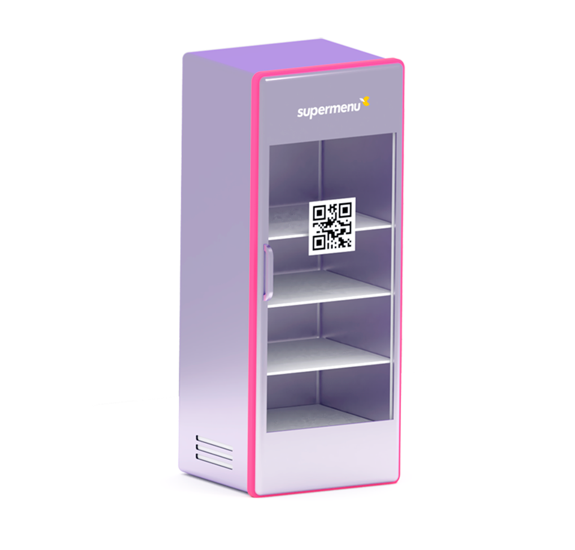

Venda através de seu próprio aplicativo, site, totem e loja autônoma.
Tudo integrado em uma só plataforma omnichannel de venda e fidelização com a marca do seu negócio.
smartphone (1) Aplicativo computer Site tourist Totem fridge Loja Autônoma Web Android iPhone ioT SABER MAIS freezer-supermenu1 mockup5-600x613 (1) mockup-totem-bebelu mockup-responsivo-demoburger1 (1) freezer-supermenu1 mockup5-600x613 (1) Anterior Próximo Parceiros Estratégicos SUA PLATAFORMA DE VENDAS Seu próprio site e aplicativo de vendas e fidelidade Assuma o controle sobre seu negócio, torne-se independente de marketplaces e aumente seu faturamento, fidelizando seus clientes em qualquer canal de consumo, seja na web, app ou na sua loja. Fornecemos tecnologia de ponta de forma acessível e de rápida implantação. Além disso, você terá um time dedicado de especialistas em mercado, tecnologia e marketing trabalhando para o crescimento do seu negócio, desenvolvendo inovações tecnológicas e compartilhando muito conteúdo estratégico para seu negócio. mockup-responsivo-demoburger1 (1) mockup-totem2 Autoatendimento Touchless Seu totem de pedidos Pra que investir dezenas de milhares de reais em totens de autoatendimento se você pode oferecer o mesmo serviço pro seu cliente com um tablet de pouco mais de mil reais? Seguro contra o Covid Sem a necessidade de contato direto e troca de cédulas. Acabe com as filas Troque 1 caixa por 2 totens e veja suas filas desaparecerem por uma fração do seu custo fixo. Aumente suas vendas Nunca se esquece de oferecer os acompanhamentos, complementos ou sobremesas. Autonomia para o cliente Permita que ele personalize o pedido, retire ingredientes e peça adicionais de forma rápida e intuitiva. AGENDAR APRESENTAÇÃOTECNOLOGIA DE PONTA IOT
Abra sua
loja autônoma
Automatizamos freezers e armários, que podem vender 24h por dia sem a necessidade de atendentes e com funcionamento 100% online.
Tecnologia ideal para micro markets e lojas de conveniência autônomas.
- Cashless
- Funcionamento 24x7
- Sem funcionários
- Gerenciamento 100% remoto
- Estoque em tempo real
- Canal de marketing direto
- Sistema de cuponagem
- Controle dinâmico de preços
- Ponto de venda onde não cabe uma loja
- Rápida implantação
